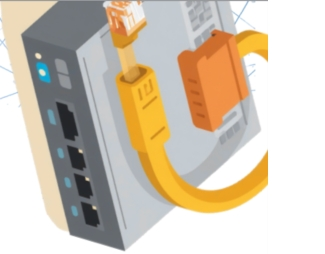
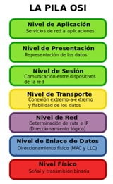
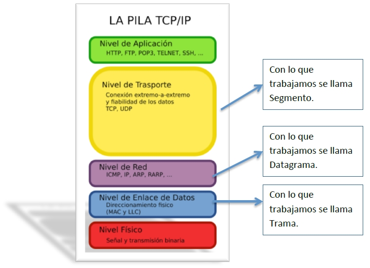

2.1 Protocolo (de comunicaciones).

🔹 Protocolo
Conjunto de reglas para comunicarse en red.
👉 Si dos equipos usan protocolos distintos → no se entienden
🔹 Capas (modelo por niveles)
Se divide la comunicación en partes para simplificar:
- Facilita mantenimiento
- Permite modificar partes sin afectar al resto
🔹 Interfaz
Reglas de comunicación entre capas.
🔹 Arquitectura de red
Conjunto de capas + protocolos.
👉 Modelo de referencia: OSI (ISO)
2.2 Modelo OSI (7 capas)

🔻 Capas orientadas a red
- Física: transmite bits (cables, señales)
- Enlace: controla errores (tramas, CRC)
- Red: direccionamiento y rutas
🔺 Capas orientadas a aplicación
- Transporte: comunicación entre aplicaciones (puertos)
- Sesión: mantiene la comunicación
- Presentación: formato, cifrado, compresión
- Aplicación: interacción con el usuario (HTTP, FTP…)
⚙ Conceptos clave
- Encapsulación: añadir cabeceras al bajar por capas
- Desencapsulación: eliminarlas al subir
🔌 Tipos de servicio
- Orientado a conexión (fiable)
- No orientado (rápido, menos fiable)
2.3 Familia de protocolos TCP/IP
📜 Historia
- Creada por DARPA (años 70)
- Base de Internet
- TCP/IP v4 sigue en uso
🧩 Capas TCP/IP
- Acceso a red
- Internet (IP)
- Transporte (TCP/UDP)
- Aplicación

2.4 Protocolos principales
🔹 Nivel de red
- IP: envía paquetes (no fiable)
- ICMP: mensajes de error
- ARP: IP → MAC
- RARP: MAC → IP
👉 Dirección MAC: identificador único del hardware
🔹 Nivel de transporte
✔ TCP (fiable)
- Establece conexión
- Garantiza entrega y orden
- Controla flujo
⚡ UDP (rápido)
- No garantiza entrega
- No ordena ni reenvía
- Usado en streaming
🔹 Nivel de aplicación
Protocolos más usados:
- HTTP → web
- FTP → archivos
- SMTP / POP → correo
- DNS → nombres de dominio
- SNMP → gestión de red
- TELNET → acceso remoto
3. Auto-evaluación
El siguiente ejercicio está relacionado con los contenidos vistos y consiste en detectar qué afirmaciones son correctas y cuáles no.
00:00: